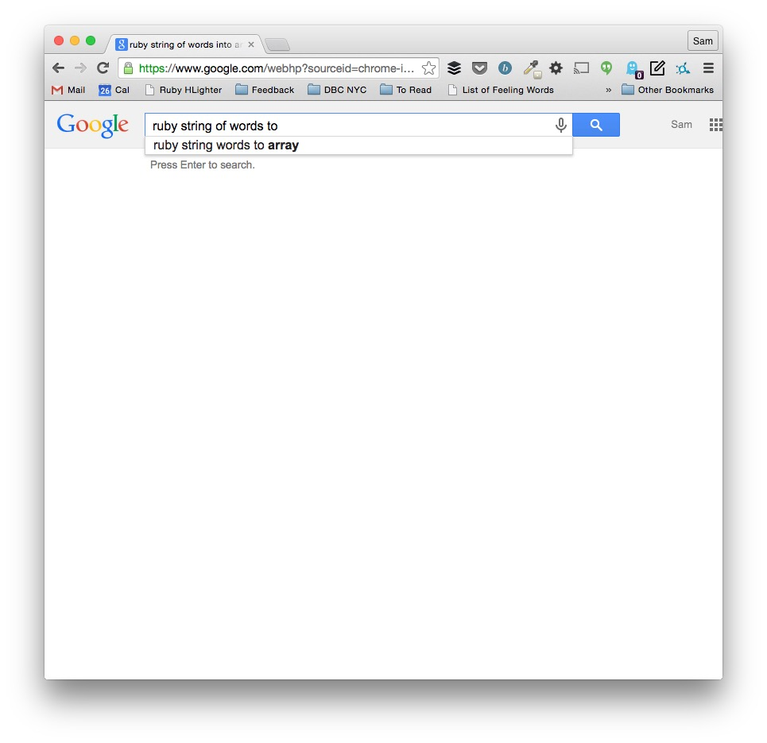

Ruby for Beginners
Building a Web Server
Brought to you by Dev Bootcamp
Hi everyone!
Some "rules" for today:
- We are here to support your learning!
- Ask every single question you have.
- Take advantage of the amazing person next to you!
- If you want to do it, do it. Have fun with this.
Welcome!
Let's get to know each other!
- What's your name, and who are you?
- What do you want to get out of this session?
- What's something quirky about you?
Outline
- Tools for learning and writing Ruby
- The role Ruby plays in the World Wide Web
- The simplest of servers with Sinatra
- Breakout - build a simple server!
- Different ways to represent data in Ruby
- Loops, conditionals and methods
- Common Ruby core library methods
- Breakout - write an algorithm!
- Interacting with Twitter using Ruby
- Serving tweets to your website
- Posting tweets from your website
- Breakout - implement your algorithm!
Ruby tools
- A command line interface (Terminal / Shell)
- The Ruby interpreter
- A text editor (Sublime Text)
- A web browser (Chrome)
- Ruby gems
- Research techniques
Research techniques
Google search and autocomplete will quickly become your best friend
Research techniques
Your ultimate goal is a super fast feedback loop.
Research techniques
Scan through the Google search results and work out which look most relevant to your issue.
Research techniques
Cmd+Click (Mac) or Ctrl+Click a link to open it in a new tab. Open what you think are the three most promising results.
Research techniques
In my experience, I've found the following resources to be particularly helpful:
- Stack Overflow
- ruby-doc.org ("The Ruby Docs")
- Guides and blog posts
Research techniques
A quick note on Stack Overflow...
Always remember that the section right at the top of the page is the question, not the answer!
Our goal
Our goal today is to build a web server that interacts with the Twitter API and sends HTML pages back to the browser.
Ruby's role
To understand Ruby's role on the Web, we need to understand the Web.
Request / Response

Specifically today

Ruby's role

Sinatra
Sinatra is a framework written in Ruby that allows us to build a server that, upon receiving a request from a browser, will respond with a page of HTML.
Routes
When your server receives a request from a browser, it needs to know what action to perform based on that request. This is called routing.
Routes
The text and slashes after the domain name in a URL is known as the path. Your server looks at the path to determine where to route a request.
http://www.mycoolsite.com/this/bit/is/the/path
Routes
If your Sinatra server received a request like this:
http://localhost:9393/hello
...it would look for a route like this:
get '/hello' do
end
Routes
Likewise, if your Sinatra server received a request like this:
http://localhost:9393/this/is/a/really/long/path
...it would look for a route like this:
get '/this/is/a/really/long/path' do
end
Response
Once your server has matched a path, it runs whatever Ruby code is between the `do` and the `end`. It will respond to the browser with the last line in the route.
Response
You can respond with a simple string:
get '/hello' do
"Why hello there, friendly Web traveler!"
end
Response
...or with an HTML file:
get '/hello' do
erb :hello
end
Sinatra will look in your "views" folder for an HTML file called "hello.erb" and send it back to the browser to display.
Running your server
Once you have a route or two set up, you need to run your server so it listens for requests.
Running your server
In your terminal, navigate to your server file's location and type "ruby" followed by the filename, eg:
ruby server.rb
Your server will now be waiting for requests.
Make a request
Head to your browser and type the address you saw in your terminal, plus one of your routes, for example:
http://localhost:4567/hello
Your server will respond to your request!
omg let's build
bit.lyChallenge
- Create three GET routes in the server.rb file
- In one of the routes, respond with a simple string
- In another route, respond with hello.erb (already there)
- In the final route, respond with your own HTML file
Coding Basics
(through a Ruby lens)
A bunch of jargon:
- "variable"
- "string"
- "integer"
- "boolean"
- "return-value"
- "array"
- "hash"
What does it all mean!?
Variables
A variable is a way of naming things so we have a reference to them later.
Variables
Think of variables as a label we can write on and apply to different things.
Variables
Let's come back to variables once we learn about a few different data types we can label.
Strings
A string is simply a sequence of characters. Here are some examples of strings in Ruby:
"This is a string."
"123456789abcde"
"!@#$%^&*()"
""
'A string can also be in single quotes'
Strings
Strings are one of the most common data types in every programming language. Get used to seeing, using and manipulating strings!
Symbols
Symbols in Ruby are similar to strings. They are also a collection of characters. This is what Ruby symbols look like:
:a_symbol
:another_symbol
:name
Symbols
Whereas strings are intended to be manipulated (for example, reversed), symbols can never change. Symbols are intended to be identifiers for things. We will see this when we talk about hashes.
Integers
Integers are another very common data type that you will see in every language. This is what they look like in Ruby:
42
100
10000
-256
Integers are numbers without fractional components.
Floats
A float, or "floating point", is how computers represent numbers with fractional components. In Ruby, floats look like this:
1.1
3.141592653589793
5.5
99.999
−128.6
Numeric methods
You can perform simple arithmetic on integers and floats using:
| Addition | + |
| Subtraction | - |
| Multiplication | * |
| Division | / |
| Modulus | % |
Numeric methods
You can also perform simple comparison operations on numbers using:
| Equality | == |
| Inequality | != |
| Greater than | > |
| Greater than or equal to | >= |
| Less than | < |
| Less than or equal to | <= |
Try it yourself!
Open up IRB by typing `irb` in your terminal.

Pop quiz!
- What does the modulus operator do?
- What happens if you multiply a string by a number?
- What happens if you multiply a number by a string?
- Can you add a number to a string?
- Do comparison operators work with strings?
Return values
Every time you press enter in IRB, you see the return value of expression you evaluated.
Return values
What data type did Ruby return when you used a comparison operator?
Comparison operators will always return a
Boolean
true or false
Booleans
Note that in Ruby:
- the value `nil` counts as false
- everything else counts as true
This can be useful when we look at conditionals later.
Back to variables
Now we know how to create a few data types, let's save them for later in some variables.
Variables
There are different types of variables in Ruby:
- local variables
- instance variables
- class variables
- global variables
Variables
The difference between variable types relates to which parts of your code can access those variables. This is known as scope.
Variables
Today we'll use local variables and instance variables. Let's look at how to declare these variables in Ruby.
Variable syntax
The syntax for declaring variables in Ruby is like this:
# this is a local variable
magic_number = 42
# this is an instance variable
@instance_variable = "My first instance variable!"
A note on naming
Naming variables in snake_case is a Ruby convention.
Storing things
You can directly assign values to variables...
seen_it = "...like we've already seen"
...or store return values of expressions in variables
num = 3
other_num = 4
multiplier = 6
answer_to_the_ultimate_question = (num + other_num) * multiplier
Data structures
Let's look at two more data structures:
- Arrays
- Hashes
Data structures
For the following data structures, we are going to learn how to create, or instantiate, them and then learn the following operations:
- Accessing values
- Updating values
- Inserting values
- Removing values
Arrays
Just like a variable holds a single value, an array holds a collection of values.
Arrays
Think of an array as a bunch of buckets, each of which stores a value.
Arrays
If we were to put the first eight characters of the alphabet into these buckets, it would look like this in Ruby:
letters = ["a","b","c","d","e","f","g","h"]
An array of the characters "a" through "h" is now stored in the local variable `letters`. This is an array of strings.
Arrays
Accessing values
Every element in an array is stored in a specific position known as an index. Arrays are indexed starting at 0 and incrementing by 1 for each position.
| 0 | 1 | 2 | 3 | 4 | 5 | 6 | 7 |
| "a" | "b" | "c" | "d" | "e" | "f" | "g" | "h" |
Arrays
You refer to each element by its index.

Arrays
Accessing values
letters = ["a","b","c","d","e","f","g","h"]
letters[0] # returns "a"
letters[7] # returns "h"
Arrays
Updating values
letters = ["a","b","c","d","e","f","g","h"]
# if we want to change "a" and "b":
letters[0] = "apples"
letters[1] = "bananas"
# letters now contains:
["apples","bananas","c","d","e","f","g","h"]
Arrays
Inserting values
letters = ["a","b","c","d"]
letters.push("elephant")
# letters now contains:
["a","b","c","d","elephant"]
The push method adds an element to the end of an array.
Arrays
Inserting values
letters = ["a","b","c","d", "elephant"]
letters.unshift("zebra")
# letters now contains:
["zebra","a","b","c","d", "elephant"]
The unshift method adds an element to the start of an array.
Arrays
Removing values
letters = ["a","b","c","d"]
char = letters.pop
# letters now contains:
["a","b","c"]
# and the local variable `char` contains:
"d"
The pop method removes an element from the end of an array.
Arrays
Removing values
letters = ["a","b","c","d"]
char = letters.shift
# letters now contains:
["b","c","d"]
# and `char` contains:
"a"
The shift method removes an element from the start of an array.
A quick note on Methods
Methods
Everything in Ruby has some built in behavior called methods. We've already seen a few array methods with push, pop, shift and unshift.
Method syntax
letters = ["a","b","c"]
letters.push("d")
# --------------------------
letters # the array that we're calling our method on
. # the dot to signify we're about to call a method
push # the name of the method
("d") # the actual calling of the method with a string argument
We call a method with a dot, followed by the method name, followed by a set of parentheses. Sometimes we put other data inside the parens, known as arguments; other times methods don't require arguments.
Method syntax
In Ruby, when a method takes no arguments, we can call that method without parentheses.
letters = ["a","b","c","d"]
letters.pop
Hashes
Hashes in Ruby are similar to arrays in that they contain a collection of values.
However, unlike arrays which are ordered by index, the values in hashes are stored in keys that you name yourself.
Hashes
In our metaphor we give each bucket a name. This is the key. The item inside the bucket is its value. So, a Ruby hash is a collection of key value pairs.
Hashes
Let's instantiate a hash in Ruby:
person = {:name => "Sam", :age => 28, :sex => "male"}
This hash contains three key value pairs and the hash is stored in the local variable `person`.
Hashes
In Ruby, you can use any data type for keys in a hash, but it is common to use symbols.
person = {:name => "Sam", :age => 28, :sex => "male"}
The arrows separating the keys and values are colloquially known as hash rockets.
Hashes
Because it is so common to use symbols as keys in hashes, there is a shortcut to create these hashes without using the hash rocket notation:
person = {name: "Sam", age: 28, sex: "male"}
This works in Ruby 1.9 and higher.
Hashes
Accessing values
person = {name: "Sam", age: 28, sex: "male"}
person[:name] # returns "Sam"
Hashes
Updating values
person = {name: "Sam", age: 28, sex: "male"}
person[:age] = 29
# person now contains:
{name: "Sam", age: 29, sex: "male"}
person[:age] # returns 29
Hashes
Inserting values
person = {name: "Sam", age: 28, sex: "male"}
person[:gender] = "cis male"
# person now contains
{name: "Sam", age: 28, sex: "male", gender: "cis male"}
Hashes
Removing values
person = {name: "Sam", age: 28, sex: "male", gender: "cis male"}
person.delete(:sex) # returns "male"
# person now contains:
{name: "Sam", age: 28, gender: "cis male"}
person[:sex] # returns nil
The delete method removes a key value pair from a hash and returns the value.
Note that if you try to access a key that doesn't exist, the hash will return nil.
Other names
These things we call hashes in Ruby can be called dictionaries, hash tables, or maps in other languages.
The closest equivalent to a Ruby hash in JavaScript is a JavaScript object.
"Objects" in Ruby are more complex and we won't discuss them in this workshop.
omg let's build.
Up next
- Loops
- Conditionals
- Functions
Loops
Doing certain things over and over and over and over is a very common thing when coding
Loops
We will look at the syntax for two JavaScript loops:
- for
- while
Loops
This is the syntax for a while loop.
var counter = 1;
while (counter <= 10) {
console.log("I'm counting in multiples of five!");
console.log("Here's what's next: " + counter * 5)
counter++
}
Loops
Here's the same operation using a for loop.
for (var counter = 1; counter <= 10; counter++) {
console.log("I'm counting in multiples of five!");
console.log("Here's what's next: " + counter * 5)
}
Loops
Compare the two:
var counter = 1;
while (counter <= 10) {
console.log("I'm counting in multiples of five!");
console.log("Here's what's next: " + counter * 5)
counter++
}
// -------------------------------------------------
for (var counter = 1; counter <= 10; counter++) {
console.log("I'm counting in multiples of five!");
console.log("Here's what's next: " + counter * 5)
}
Warning!
Be careful not to code a loop that will never end. It will cause your browser to freeze and crash!
// Don't run the following code!
var counter = 1;
while (counter <= 10) {
console.log("I'm counting in multiples of five!");
console.log("Here's what's next: " + counter * 5)
}
This is called an infinite loop. Can you see why it never ends?
Loops
Here's a fun game with a while loop.
var secretPhrase = "bananas"
var userInput
while (userInput !== secretPhrase) {
userInput = prompt("Haha! You will continue to get this annoying\
pop up until you guess the secret phrase!")
}
alert("Drat! You guessed it!")
Loops
The most common use of loops is to loop over collections. We loop over collections when we want to do something with every element in a collection.
Loops
Here's a for loop looping over and printing out every element in our letters array:
var letters = ["a","b","c","d","e","f","g","h"];
for (var i = 0; i < letters.length; i++) {
console.log(letters[i]);
}
There's a lot going on here. So let's talk through it.
Try it yourself!
Open up your handy dandy JavaScript console by pressing Cmd+Opt+J on Mac or Ctrl+Shift+J on other systems.
Conditionals
Sometimes you want your code to do different things depending on different inputs. This is called control flow.
Conditionals
Maybe you need to check someone's age before you let them use your program:
var age = prompt("How old are you?");
if (age >= 18) {
alert("Welcome to this program!")
} else {
alert("Sorry, you must be 18 or over to use this program.")
}
Breaking it down
if // reserved word to start a condtional
(age >= 18) // the "condition"
{} // the "code block" to run if the condition is true
else // reserved word at the end of a conditional
{} // the code block to run if all conditions are false
Functions
What is a function?
A function is a selection of code that you can save and run later, potentially multiple times.
Function syntax
We define a function like this:
var createGreeting = function(name) {
return "Welcome to my website, " + name;
}
The code is now stored in the variable `createGreeting`. Now we can call this the createGreeting function.
Calling a function
We call a function by typing its name, followed by parentheses.
var createGreeting = function(name) {
return "Welcome to my website, " + name;
}
createGreeting("Sam") // returns "Welcome to my website, Sam"
createGreeting("Debbie") // returns "Welcome to my website, Debbie"
createGreeting("Britney") // returns "Welcome to my website, Britney"
alert(createGreeting("Stranger"))
Input and Output
Functions allow us to input some data and output other data.
Arguments
The input that we give to functions are called arguments.
var sum = function(num1, num2) {}
`num1` and `num2` are the parameters in this function that show us that we can pass it two arguments.
Return values
The output from a function is its return value.
var sum = function(num1, num2) {
var result = num1 + num2;
return result;
}
Usually we manipulate our input in some useful way and then return that data.
Functions
Functions don't actually need parameters or a return statement. Here's an example:
var woohoo = function() {
alert("WOOHOO!");
}
Try it yourself!
Open up your handy dandy JavaScript console by pressing Cmd+Opt+J on Mac or Ctrl+Shift+J on other systems.
jQuery
A JavaScript library that makes it easier for us to interact with webpages.
Some new files!
bit.ly/dbc-jquery-introLoading jQuery
In the index.html file, you'll see a <script> element linking to a copy of the jQuery in the same folder. This is one way to include jQuery on your page.
You'll also see a <script> element that is commented out. This is another way of including jQuery: by linking to an external source.
Selecting elements
We are going to be playing with the HTML elements on our page. To do that, we first need to select those elements using jQuery.
Selecting elements
The syntax for selecting elements with jQuery is:
$("div")
This will select all of the div elements on the page.
Selecting elements
You can use any CSS selection syntax with jQuery:
// to select all paragraph elements:
$("p")
// to select all elements with the class 'shadow':
$(".shadow")
// to select the element with the id 'main-container':
$("#main-container")
Just remember to wrap your selector in quote marks to make it a string.
jQuery methods
Once we have selected elements, we can call jQuery methods on those elements:
$("p").css("background-color", "aqua");
This selects all paragraphs and then turns their background colors aqua!
Try it yourself!
Open up your handy dandy JavaScript console by pressing Cmd+Opt+J on Mac or Ctrl+Shift+J on other systems.
Make sure you open it up on the index.html page that has jQuery loaded!
Listening for events
Interacting with a website through clicks and keystrokes really brings JavaScript (and websites) to life!
Listening for events
Let's learn how to tell certain elements on our page to listen for a click event.
Listening for events
First we need to select an element. Let's select our button:
$("#load-tweets-button")
Listening for events
Now we need to bind a click event to our button:
$("#load-tweets-button").click(function() {
alert("Button clicked!");
})
What this says is: 'whenever this thing I have selected is clicked, run the code in this function'.
Listening for events
One very common thing to do when a button is clicked is to update something else on the page.
$("#load-tweets-button").click(function() {
// your code here that updates something else on the page, maybe:
$("p").css("background-color", "aqua");
})
Now whenever you click the button, all the paragraphs will turn aqua!
Updating the page
Updating the page
Here's one more super helpful jQuery method called `append`:
$("#main-container").append("A friendly paragraph!
")
The append method will append whatever HTML string you pass it as an argument to the element(s) you originally selected.
Updating the page
Remember, you can add things to strings like this:
var dataFromSomewhere = "A friendly paragraph!"
$("#main-container").append("" + dataFromSomewhere + "
")
This is called string concatenation.
Putting it all together
You now have all the tools to dynamically create a webpage! It might strain your brain, but it's time to put everything we learnt into practice.
omg let's build.
bit.ly/dbc-jquery-introResources to learn more
- Codecademy
- Code School
- Treehouse
- Stack Overflow
- jQuery Documentation
- MDN (Mozilla Developer Network)
- W3 Schools
- Guides and blog posts
- Playing around!